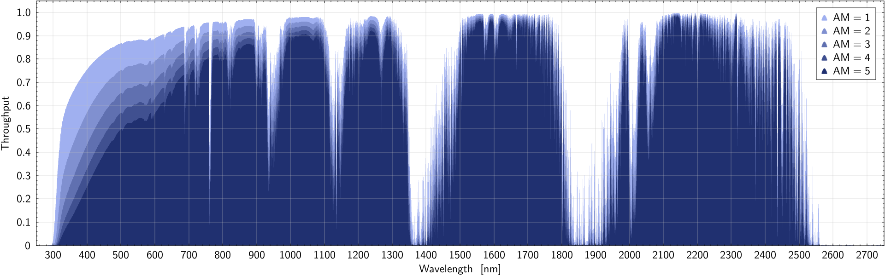
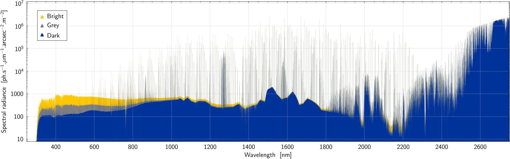
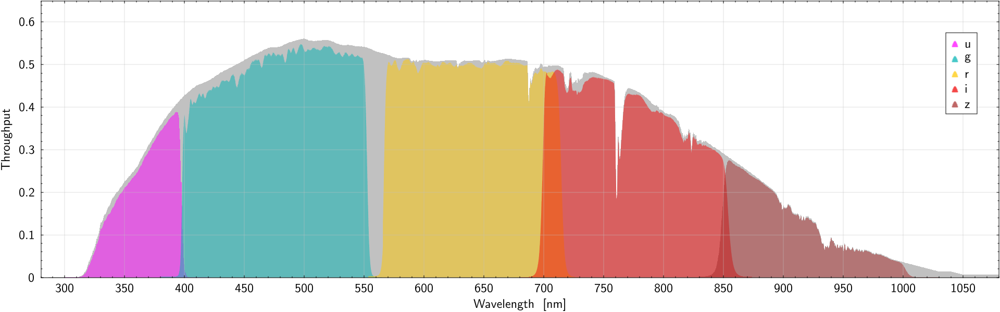
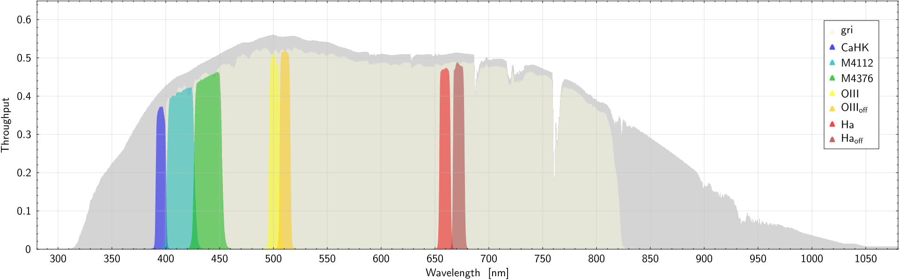
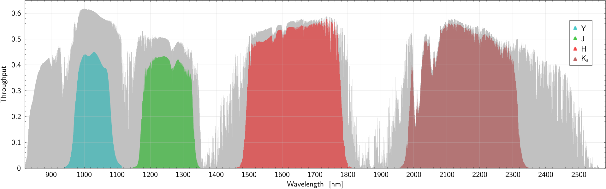
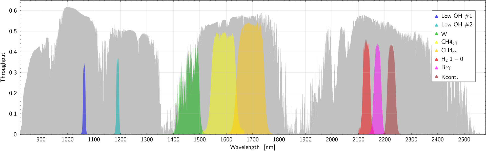

Data
PyDIET relies largely on precomputed spectral data to feed its simulation engine.
This section illustrates their content and explains how they were obtained in the context of the CFHT configuration of the ETC.
{kind=link}
Atmosphere
Transmission
Atmospheric transmission as a function of wavelength is pre-computed for a set of airmasses, using the MODTRAN radiative transfer code.
Transmission curves were generated from 200 to 5000 nm with a 0.5 nm step in wavelength for airmasses between 1 and 5.
For Mauna Kea Observatories (MKO), we used a tropical atmosphere model at an altitude of 4204 m, with the defaults settings, except for the CO2 concentration which we set at 430ppm. The O3 and H20 concentrations appear broadly compatible with the findings of [7].

Fig. 4 Atmospheric transmission as a function of wavelength at the MKO site for different airmasses. For clarity only the part blueward of 2800nm is shown here.
Emission
Atmospheric emission (including airglow, light diffused from the Moon and stars, zodiacal light, thermal emission and light pollution) also comes pre-computed, using the ESO Sky Model Calculator (SKYCALC) [8, 9]. In addition to the different airmasses, emission models are also pre-computed for three levels of illumination by the Moon (dark: no Moon, grey: 66.4° Moon phase at 45° elevation and 45° distance from the line-of-sight, and bright: 101.5° Moon phase at 45° elevation and 45° distance from the line-of-sight), and three levels of solar activity (low: 70 SFU, average: 130 SFU, and high: 200 SFU).
SKYCALC does not offer a model for the MKO; hence the emission spectra generated for PyDIET where generated with the model originally built for the Cerro Armazones site, which is closest to MKO in terms of altitude (3060m) and distance from the poles (albeit in the southern hemisphere). Photometric comparisons with CFHT observations <chap_validation> show a good match with the Cerro Armazones model predictions.

Fig. 5 Sky brightness as a function of wavelength at the MKO site for different Moon conditions: dark, grey, and bright (see text), with average solar activity (130 SFU) and airmass 1.2. For clarity only the part blueward of 2800nm is shown here.
Filter curves
The CFHT filter curves in PyDIET originate from the MegaCam and WIRCam instrument filter pages. They were converted to Synphot-compliant FITS throughput tables using the provided extract_filter.py Python script. Fig. 6, Fig. 7, Fig. 8, and Fig. 9 show the total throughput as a function of wavelength for all the supported filters.

Fig. 6 Total throughput at airmass 1.2, including atmosphere and instrument (in grey), as a function of wavelength for the MegaCam ugriz filters.


Fig. 8 Total throughput at airmass 1.2, including atmosphere and instrument (in grey), as a function of wavelength for the WIRCam YJHKₛ filters.

Telescope mirror(s)
Mirror ageing
The mirror contribution to the instrumental response is represented by a wavelength-dependent throughput (reflectance) curve \(T_\mathrm{mir}(\lambda)\). PyDIET can use several throughput curves for \(T_\mathrm{mir}(\lambda)\), each representing a different mirror state, from "pristine" (the reference), to, e.g., different levels of surface degradation with time. This degradation is not computed inside PyDIET, but a stand-alone Python script, degrade_mirror.py, is provided that can be "applied" to a pristine mirror reflectance curve to generate degraded reflectance curves once for all.
The degradation model in degrade_mirror.py follows the two-factor description of [10], in which the loss of reflectance is described as the product of:
an achromatic loss term, independent of wavelength;
a wavelength-dependent scattering term caused by the growth of surface roughness.
If \(T_\mathrm{mir}^{(0)}(\lambda)\) is the pristine mirror reflectance/throughput, the aged mirror throughput after a time \(t\) since re-coating is written
where \(D(\lambda, t)\) is the relative degradation factor. The script uses
where
and
Here \(A\) is the achromatic loss rate, \(\sigma_0\) is the initial RMS surface roughness just after coating, \(S\) is the rate at which the RMS roughness increases with time, and \(\theta_i\) is the angle of incidence on the mirror.
The achromatic factor \(\alpha(t)\) lowers the mirror reflectance by the same multiplicative amount at all wavelengths. It represents grey losses such as uniform contamination or coating ageing.
The exponential scattering term produces a chromatic loss. Since it depends on \((\sigma/\lambda)^2\), the effect is stronger at short wavelengths. As the surface roughness grows with time, the blue part of the mirror response therefore degrades faster than the red and near-infrared part.
The default parameters used by the PyDIET mirror-degradation utility are \(A = 0.023~\mathrm{yr}^{-1}\), \(\sigma_0 = 10~\mathrm{\AA}\), \(S = 40~\mathrm{\AA},\mathrm{yr}^{-1}\), and \(\left<\cos^2\theta_i\right> = 0.9974\).
The degraded mirror curve is produced by multiplying the tabulated pristine throughput by \(D(\lambda,t)\). The resulting curve is then used like any other mirror throughput curve in the instrumental response:
Consequently, mirror ageing affects the magnitude zero-point through the reference-source count rate. A degraded mirror lowers the detected count rate from both astronomical sources and sky background. The zero-point becomes fainter because a source of a given magnitude produces fewer detected counts per second.
The chromatic part of the degradation also means that the zero-point change is filter-dependent. Blue filters are affected more strongly than red or near-infrared filters, because scattering losses scale approximately as \(\lambda^{-2}\) for a given roughness.